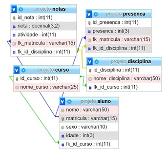
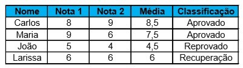
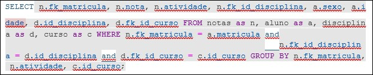
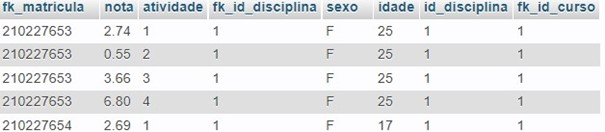

Desenvolvendo o Projeto
O projeto consiste em um algoritmo de Machine Learning, capaz de decidir se um
aluno irá ser aprovado ou reprovado em certa atividade. Foi usado como dados de
treino, o sistema de notas da universidade UNISAL, onde é aplicado 4 atividades por
matérias, obtendo a seguinte formula para a média: m = ((a1 + a2 + a3) * 0,7) + (a4 *
0,3).
O algoritmo será desenvolvido utilizando a linguagem python, capaz de receber dados
armazenados em um banco de dados de diversos alunos que serão cadastrados. A
partir dos dados armazenados no banco, será gerada uma ETL utilizando a ferramenta
Alteryx, que posteriormente servirá de base de dados para um relatório do Power BI,
capaz de gerar gráficos e medidas que serão utilizadas para consultas dos alunos e
observação dos professores, que adotarão medidas para ajudar os alunos. Em
resumo, a utilização dessa aplicação será diretamente voltada ao monitoramento do
aluno ao seu desempenho escolar e em quais matérias possui dificuldade ou irá
possuir, baseado em seu desempenho em disciplinas anteriores.
Os dados necessários para o projeto, será coletado através de um banco de dados. Um banco de
dados ou base de dados, são conjuntos de informações relacionados a pessoas, lugares ou coisas
(como exemplo, o cadastro em websites).
Geralmente, banco de dados compõem tabelas, que se relacionam com identificadores, e as
tabelas, contém os dados.
Hoje, existem vários tipos de Banco de dados (Oracle, MySQL, SQL Server etc), porém, os
dados do projeto estão acolados em um banco MySQL.O banco de dados do projeto, consistem em 5 tabelas
(aluno, notas, disciplina, curso, presença), onde todas estão alocadas com dados.
De início ao projeto, não será usado a tabela presença, que contêm os dados da quantidade de presença do aluno em aulas.


Em um banco de dados, é possível se executar “Query”, que são comandos para
manipular ou obter dados de acordo com condições necessárias. De início, serão necessários os dados em uma única tabela.
Com essa “Query”, é possível obter os dados agrupados em uma única tabela, porém,
filtrados de acordo com as condições necessárias.
Para isso, será executado a seguinte “Query”:


Esses dados serão tratados, usando a ferramenta de planilha Excel. Com o Excel, será removido a coluna de dados de matrícula,
e será calculado a média de todas as notas por atividade, e adicionando a coluna de “status”, onde terá o dado de aprovado ou reprovado.
Ainda terão inconsistências nos dados, será necessário alterar dados alfanuméricos para dados numéricos. Com isso,
dados do tipo aprovado se altera para 1, e reprovado para 0. Isso se aplicará para a coluna “sexo”.
Com os dados tratados, já é possível iniciar o algoritmo de Machine Learning.
Esses dados serão tratados, usando a ferramenta de planilha Excel. Com o Excel, será removido a coluna de dados de matrícula,
e será calculado a média de todas as notas por atividade, e adicionando a coluna de “status”, onde terá o dado de aprovado ou reprovado.
Ainda terão inconsistências nos dados, será necessário alterar dados alfanuméricos para dados numéricos. Com isso,
dados do tipo aprovado se altera para 1, e reprovado para 0. Isso se aplicará para a coluna “sexo”.
Com os dados tratados, já é possível iniciar o algoritmo de Machine Learning.